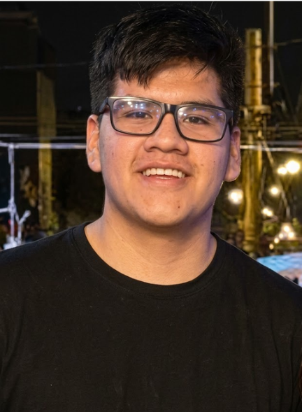

PORTAFOLIO ESTUDIANTIL
Taller de Desarrollo de Aplicaciones I
Algoritmos y Estructura de Datos
Taller de Desarrollo de Aplicaciones I
Algoritmos y Estructura de Datos

Soy estudiante de Ingeniería de Sistemas y Computación en la Universidad Peruana Los Andes (UPLA), actualmente cursando el IV ciclo de formación profesional.
Mi formación está orientada al desarrollo de software, programación, análisis de algoritmos y creación de soluciones tecnológicas capaces de resolver problemas reales mediante la ingeniería y la innovación digital.
Durante mi preparación profesional desarrollo conocimientos en desarrollo de aplicaciones, estructuras de datos, bases de datos, tecnologías web y diseño de sistemas informáticos.
Tengo interés en la transformación digital, la creación de software y el desarrollo de herramientas tecnológicas que generen soluciones eficientes para las organizaciones.